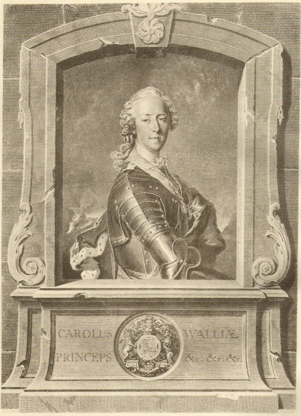

Charlie, Ye are Welcome!
Tune
(The first line is a modification in the major modeof "O Charlie is my Darling!")
Arrangement John Greig "Scots Minstrelsie" 1903
Sequenced by Ch.Souchon


1. Charlie, ye are welcome, welcome, welcome,
Charlie, ye are welcome to Scotland and to me;
There's some folk in yon toun, yon toun, yon toun,
There's some folk in yon toun,I trow, that should na be.
Charlie we'll no name them, name them, name them,
Charlie we'll no name them, though we ken wha they be;
The swords they are ready, ready, ready
The swords they are ready, I trow, to make them flee.
2. Charlie, ye'll get backin', backin', backin',
Charlie, ye'll get backin', baith here an' owre the sea;
The clans are a' gath'rin', gath'rin', gath'rin'.
The clans are a' gath'rin', to set their kintra free.
Charlie, 'tis the warnin', warnin', warnin',
Charlie, 'tis the warnin', we hear owre hill and lea;
The colours they are flyin', flyin', flyin',
The colours they are flyin', to lead to victorie!
1. Charlie, bienvenue, bienvenue,
Charlie, bienvenue, en Ecosse et chez moi;
Mais certains au village, oui, au village,
Mais certains au village, sont d'un tout autre avis.
Charlie, je veux taire, taire, taire,
Charlie je veux taire leurs noms, mais les connais;
Et nos épées sont prêtes, prêtes, prêtes
Et nos épées sont prêtes, pour les fair' décamper.
2. Charlie, tu as l' aide, l'aide, l'aide,
Charlie, tu as l'aide des tiens et des Français;
Vois, les clans qui s'assembent, -semblent, -semblent.
Vois, les clans qui s'assemblent pour notre liberté.
Charlie, c'est l'alerte, oui, c'est l'alerte
Charlie, c'est l'alerte par les monts et les prés;
Et les étendards flottent, flottent, flottent,
Et les étendards flottent, nous serons victorieux!
Trad Chr. Souchon (c) 2006
Map
The chief cause of the new adhesions was the admiration of these generous and hardy people for the dignified familiarity and the courage of the young man, who instinctly knew how to improve the advantages he had obtained over their minds: he endeavoured to learn their
language
, which he daily practised and decided to adopt their
dress
. This is the reason for the veneration, expressed in
most of the present songs
, in which his memory was held by the Highlanders for more than a century. The enthusiasm of his supporters was catching: before
ascending the Corriearrick mountain
, on the 27th August 1745, he declared solemnly, when in the act of tying the latchets of his shoes, that he would not unloose them till he came up with Cope's army.
Source: Electricscotland.com
La principale cause de ces adhésions était le charisme qu'exerçait sur ces hommes généreux et intrépides ce jeune homme courageux, aux manières à la fois dignes et familières, qui savait instinctivement tirer partie de l'ascendant qu'il avait pris sur eux: il s'efforçait d'apprendre leur
langue
et faisait des exercices quotidiens. Il décida d'adopter leur
costume
. C'est là l'origine d'une vénération qui s'exprime dans la plupart des
présent chants
et dont les Highlanders ne se sont pas départis pendant plus d'un siècle. L'enthousiasme contagieux de ses partisans conduisit Charles, avant d'entreprendre
l'ascension du Corriearrick
, le 27 août 1745, à déclarer solennellement, alors qu'il fixait les courroies de ses chaussures, ne pas vouloir les défaire avant d'avoir rencontré l'armée de Cope.
Source: Electricscotland.com